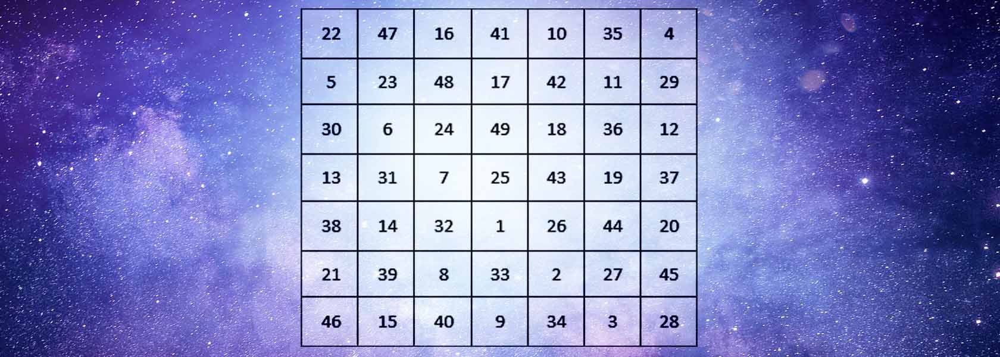

ב'ה

Magia Espiritual.
Quizá te parezca intrigante este término, o quizá ambiguo; lo cierto es que lo acuñamos acá ya que lo vemos como la combinación de dos disciplinas que todo estudiante de Alta Sabiduría pone en práctica. Nos referimos a la Magia Natural y a la Magia Celestial.
Antes de continuar me gustaría explicar a fondo el término “Magia”. Sin duda cuando vemos que algo maravilloso sucede, la palabra magia viene a nuestro pensamiento, decimos que “pasó como por arte de magia”. No obstante, nada en este mundo y en este universo sucede de manera aleatoria. Todo tiene un origen, una causa. Hacer que la Magia suceda es que pongamos a trabajar nuestro poder interno, a través del cual alcanzamos esas maravillas. Y este poder se alimenta con la fuerza más grande y abundante que existe en el universo: el espíritu.
Magia es que tomes responsabilidad de tus actos, tus pensamientos y tus deseos, y le imprimas la fuerza de tu espíritu a cada uno de ellos.
En la oscura Edad Media el término magia fue mal utilizado, le adjuntaron o adscribieron prácticas hechiceras de muy baja consciencia espiritual; eso devino en una cacería de brujas por un lado, y por otro lado, a entorpecer la mente de aquellos que buscando venganzas personales, pensaban que en la magia encontrarían un remedio para lograr lo que por su propia voluntad no lograron. Y es que la salida fácil siempre ha sido una seductora tentación para aquellos de mente débil. De igual forma, para aquellos que no lograron comprender los secretos del poder interno que el ser humano posee, el término magia al entrar en su pensamiento fue pervertido por su ya mente corrupta, adormecida por viejos sistemas de control sobre el vulgo. Con el tiempo el término va transformándose hasta la ilusoria práctica que podemos observar hoy día en programas de entretenimiento. Y no es que este último esté mal, al fin y al cabo cumple su cometido: entretener a un público que no quiere pensar por su propia cuenta y deja que le sorprendan con el truco.
No obstante, la magia está en ti; el truco está en que logres aquello que los demás no pueden o no comprenden.
La Magia Natural consiste en orientar las fuerzas de la naturaleza para que, dentro de su propio equilibrio, puedan expresar todas las facultades con que fueron concebidas. Tales capacidades están en todo cuerpo existente en el universo a través de las 4 fuerzas que lo unen todo: Fuego, Agua, Aire y Tierra. Así, por ejemplo, hacemos uso de la Magia Natural para lograr un balance en el ambiente que ponga armonía entre las diferentes creaturas que se desarrollan dentro de un medio ambiente en común, como alejar fieras peligrosas, ahuyentar escorpiones, alejar plagas, etc.
La Magia Celestial radica en que recuperemos el estatus con que fuimos creados el sexto día de la creación. Siendo el ser humano hoy en día una parte de aquella súper alma que fuera emanada en la noche de los tiempos, contenemos todo lo que fue creado antes que nosotros. Es decir, si los planetas fueron creados el cuarto día, nosotros al haber sido creados al sexto día englobamos, cubrimos, abrigamos, cobijamos, envolvemos cada planeta existente en el universo. Somos el manto que envuelve a todo lo demás, y por lo tanto podemos tener control sobre ello.
El gran secreto en esto reside en que cada planeta y estrella existente es la habitación de una fuerza inteligente no física. Cada planeta tiene su alma (incluido el nuestro), y esa alma está atenta a los actos de la humanidad. Esa alma inteligente es una energía positiva, sin embargo, el planeta también puede ejercer una fuerza negativa debido a la materialidad del mismo, pues todo lo que es material representa una pérdida de la luz primordial.
El planeta Tierra tiene la influencia directa de 9 planetas, más algunos planetoides o asteroides. La magia Celestial consiste en que hagamos uso de nuestra fuerza espiritual para reorientar dichos astros a nuestro favor, y que de esa manera la influencia que ejerzan sea totalmente positiva. La Magia Celestial hace uso entonces de herramientas celestiales dirigidas mediante palabras de poder o mediante signos de poder (como las letras hebreas), en donde adjudicamos que poseemos control sobre tales fuerzas cósmicas. De esa manera manifestamos la perfección divina, pues el Creador nos ha hecho con todas las facultades para que perfeccionemos Su creación.
De este modo, la Magia Espiritual consiste en que hagamos uso de manera correcta del poder con el cual fuimos creados, pues el Creador nos hizo con un único objetivo: hacerle manifiesto a Él. De ahí que cuando expresas perfección y pureza en tus actos, expresas la perfección y pureza del Creador de Todo.
Los talismanes (kemia), anillos grabados con símbolos de poder, pergaminos, entre otras cosas, se convierten en la manifestación física donde imprimimos nuestra fuerza espiritual, siendo palpable en forma manifiesta nuestra influencia sobre las fuerzas naturales y celestiales.